토목산업기사 (2008-03-02 기출문제)
1과목: 응용역학
1. 그림과 같은 게르버보의 A점의 휨모멘트는?
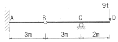
- 72tㆍ7m
- 36tㆍ3m
- 27tㆍ2m
- 18tㆍ1m
(정답률: 알수없음)

2. 가로 8cm, 세로 12cm의 직사각형 단면을 가진 길이 3.45m의 양단힌지 기둥의 세장비(λ)는?
- 99.6
- 69.7
- 149.4
- 104.6
(정답률: 알수없음)
3. 다음 그림의 보에서 C점에 Δc=0.2㎝의 처짐이 발생 하였다. 만약 D점의 P를 D점에 작용시켰을 경우 D점에 생기는 처짐 ΔD의 값은?
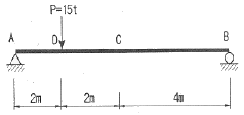
- 0.6cm
- 0.4cm
- 0.2cm
- 0.1cm
(정답률: 알수없음)
4. 경간 ℓ=8m, 단면 30×30cm 되는 단순보의 중앙에 10t되는 집중하중이 작용할 때 최대 휨응력은?
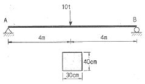
- 200kg/cm2
- 250kg/cm2
- 300kg/cm2
- 350kg/cm2
(정답률: 알수없음)
5. 변형률이 0.015일 때 응력이1,200kg/cm2이면 탄성계수(E)는?
- 6×104kg/cm2
- 7×104kg/cm2
- 8×104kg/cm2
- 9×104kg/cm2
(정답률: 알수없음)
6. 그림과 같은 등질, 등단면인 2개의 보(A), (B)에서 최대 휨모멘트가 같게 되기 위한 집중하중의 비 P1:P2의 값은 얼마인가?
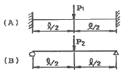
- 2 : 1
- 4 : 1
- 3 : 1
- 2 : 1
(정답률: 알수없음)
7. 지름 32cm 의 원형단면보에서 3.14t 의 전단력이 작용할 때 최대 전단응력은?
- 6.0kg/cm2
- 5.21kg/cm2
- 12.2kg/cm2
- 21.8kg/cm2
(정답률: 77%)
8. 그림과 같은 3활절 라멘에 일어나는 최대휨모멘트는?
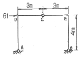
- 9t∙m
- 12t∙m
- 15t∙m
- 18t∙m
(정답률: 알수없음)
9. 다음 그림과 같은 구조물에서 사재 A의 축력으로 옳은 것은?
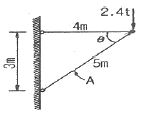
- 1.4t (인장)
- 1.9t (압축)
- 3.0t (인장)
- 4.0t (압축)
(정답률: 알수없음)
10. 다음 구조물 중 부정정 차수가 가장 높은 것은?
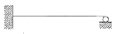
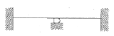
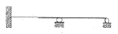
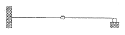
(정답률: 알수없음)
11. 그림과 같은 캔틸레버보의 자유단에 단위처짐이 발생하도록 하는데 필요한 등분포하중 w의 크기는? (단, EI는 일정하다.)
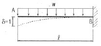
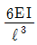
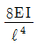
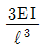
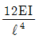
(정답률: 알수없음)
12. 길이 6m인 단순보에 그림과 같이 집중하중 7t, 2t 이 작용할 때 휨모멘트는 얼마인가?
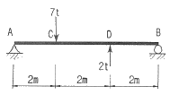
- 7t∙m
- 10.5t∙m
- 8t∙m
- 7.5t∙m
(정답률: 알수없음)
13. 그림과 같은 장주의 강도를 옳게 표시한 것은? (단, 재질 및 단면은 같다.)
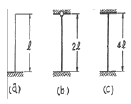
- (b)＞(a)＞(c)
- (a)＜(b)=(c)
- (c)＞(b)＞(a)
- (a)=(c)＞(b)
(정답률: 알수없음)
14. 그림의 직사각형 단면에서 0점에서 대한 단면2차 극모멘트 Ip는?
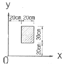
- 1350000㎝4
- 1250000㎝4
- 1340000㎝4
- 1240000㎝4
(정답률: 알수없음)
15. 그림과 같은 1차 부정정보의 부재중에서 B지점을 제외한 모멘트가 0 이 되는 곳은 A점에서 얼마 떨어진 곳인가? (단, 자중은 무시한다.)
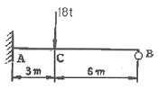
- 3 m
- 2.50 m
- 1.96 m
- 1.50 m
(정답률: 알수없음)
16. 탄성계수 E, 전단 탄성계수 G, 프아송의 수 m 사이의 관계를 옳게 표시한 것은?
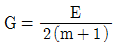
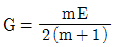
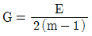
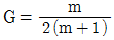
(정답률: 알수없음)
17. 그림과 같은 평형을 이루는 세힘에 관하여 다음 설명 중 옳은 것은?
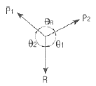
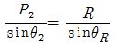
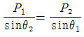
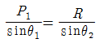
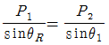
(정답률: 알수없음)
18. 그림과 같은 하우 트러스의 bc 부재의 부재력은?
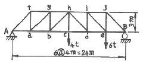
- 2 t
- 4 t
- 8 t
- 12 t
(정답률: 알수없음)
19. 다음 그림과 같은 2경간 연속보에서 MB 의 크기는? (단, EI는 일정하다.)
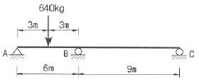
- 288kg∙m
- 248kg∙m
- 208kg∙m
- 168kg∙m
(정답률: 알수없음)
20. 사다리꼴 단면에서 x 축에 대한 단면 2차 모멘트값은?
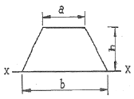
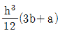
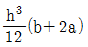
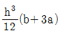
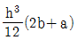
(정답률: 알수없음)
2과목: 측량학
21. 동일각에 대하여 측정회수를 달리하여 다음과 같은 측정치를 얻었을 때 최학치는 얼마인가? (단 측정치는 42° 26′18′′: 3회측정, 42° 36′24′′ : 5회측정, 42° 36′28′′ : 7회 측정이다.)
- 42° 36′18′′
- 42° 36′20′′
- 42° 36′22′′
- 42° 36′25′′
(정답률: 알수없음)
22. 축척 1/50,000 지형도에서 A점으로부터 B점까지의 도상 거리가 70mm 이었다. A쩜의 표고가 200m, B점의 표고가 10m이라면 이 사면의 경사는?
- 1/18.4
- 1/20.5
- 1/22.3
- 1/25.1
(정답률: 알수없음)
23. 촬영고도 4,000m에서 종중복도 60%인 2장의 사진에서 기선길이가 각각 102mm와 95mm였다면 기준면으로부터의 높이가 50m인 철탑의 시차차는 얼마인가? (단, 카메라 초점거리는 150mm임)
- 1.23mm
- 1.42mm
- 2.37mm
- 2.42mm
(정답률: 알수없음)
24. 그림과 같이 삼각점 A에 기계를 설치하여 삼각점 B가 시준되지 않으므로 점 P를 관측하여 T′=60° 32′15′′를 얻었다면 각 T는? (단,
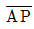
=1.3㎞, e=5m,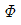
=315°)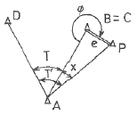
- 60° 32′23′′
- 60° 2254′′
- 60° 21′09′′
- 60° 17′09′′
(정답률: 알수없음)
25. 어떤 도시개발사업지구를 측량하여 축척 1/3000 로 도면을 작성하였다. 도면상의 면적이 3600cm2일 때 실제 면적은 몇 km2인가?
- 324.0km2
- 32.4km2
- 3.24km2
- 0.324km2
(정답률: 알수없음)
26. 반지름 R=200m인 원곡선을 설치하고자 한다. 도로의 시점으로부터 1243.27m 거리에 교점(I.P)이 있고 그림과 같이 ∠A와∠B를 관측하였을 때 원곡선 시점(B.C)의 위치는? (단, 도로의 중심점 간격은 20m이다.)
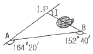
- No.3 + 1.22m
- No.3 + 18.78m
- No.58 + 4.49m
- No.58 + 15.51m
(정답률: 알수없음)
27. 다음 완화곡선에 대한 설명 중 잘못된 것은?
- 완화곡선의 곡선반지름(R)은 시점에서 무한대이다.
- 완화곡선의 접선은 시점에서 직선에 접한다.
- 완화곡선의 종점에 있는 캔트(cant)는 원곡선의 캔트(cant)와 같다.
- 완화곡선의 길이(L)는 도로폭에 따라 결정된다.
(정답률: 알수없음)
28. 두점간 거리 D=2000m이고 방위각은 45°±′′이다. 좌표 계산에 있어서 B점의 X좌표값에 대한 오차는 얼마인가? (단, 거리관측값 오차는 무시한다.)
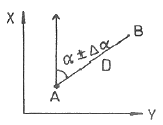
- ±1.2㎝
- ±2.3㎝
- ±3.4㎝
- ±4.5㎝
(정답률: 20%)
29. 평판의 설치에 있어서 고려하지 않아도 되는 것은?
- 수평 맞추기
- 방향 맞추기
- 구심 맞추기
- 외심 맞추기
(정답률: 알수없음)
30. 수준측량의 오차 최소화 방법 중 틀린 것은?
- 표척의 영점오차는 기계의 정치 횟수를 짝수로 세워 오차를 최소화 한다.
- 시차는 망원경의 접안경 및 대물경을 명확히 조절한다.
- 눈금오차는 기준자와 비교하여 보정값을 정하고 온도에 대한 온도보정도 실시한다.
- 표척 기울기에 대한 오차는 표척을 앞뒤로 흔들 때의 최대값을 읽음으로 최소화 한다.
(정답률: 알수없음)
31. 동일한 구역을 같은 사진기를 이용하여 촬영할 때 비행고도를 1000m에서 2000m로 높인다고 가정하면 1000m 촬영에서 100장의 사진이 필요할 때 2000m에서는 몇 장이 필요한 가?
- 400장
- 200장
- 50장
- 25장
(정답률: 알수없음)
32. A, B, C, D 네 사람이 거리 10km, 8km, 6km, 4km의 구간을 왕복 수준측량하여 폐합차를 각가 20mm, 18mm, 15mm, 13mm 얻었을 때 가장 정확한 결과를 얻은 사람은?
- A
- B
- C
- D
(정답률: 알수없음)
33. 유심다각 조정에서 고려해야 할 조정조건이 아닌 것은?
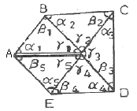
- α2+β2+γ2=180°
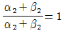
- γ1+γ2+γ3+γ4+γ5=360°
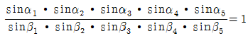
(정답률: 알수없음)
34. 지형의 표시법 중 임의 점의 표고를 숫자로 도상에 나타내는 방법으로 주로 해도, 하천, 항만의 수심을 나타내는 경우에 사용되는 방법은?
- 등고선법
- 음영법
- 점고법
- 영선법
(정답률: 알수없음)
35. 유속 측량 장소의 선정 시 고려하여야할 사항으로 옳지 않은 것은?
- 직류부로서 흐름과 하상경사가 일정하여야 한다.
- 수위 변화에 횡단 형상이 급변하지 않아야 한다.
- 가급적 수위의 변화가 많은 곳이어야 한다.
- 관측장소의 상, 하류의 유로가 일정한 단면을 갖고 있으며 관측이 편리하여야 한다.
(정답률: 알수없음)
36. 다음 표는 폐합트레버스 위거, 경거의 계산 결과이다. 면적을 구하기 위한 CD축선의 배휭거는 얼마인가?
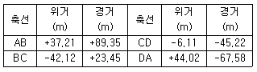
- 180.38 m
- 202.15 m
- 311.23 m
- 360.15 m
(정답률: 알수없음)
37. 등고선의 특성 중 틀린 것은?
- 등고선은 분수선과 직교하고 계곡선과는 평행하다.
- 동굴이나 절벽에서는 교차한다.
- 동일 등고선상의 모든 점은 높이가 같다.
- 등고선은 도면내외에서 폐합하는 폐곡선이다.
(정답률: 알수없음)
38. 교각 I=60°, 곡선반지름 R=200m 일 때 중앙종거법에 의해 원곡선을 측설할 때 8등분점의 중앙종거(M3)는?
- 26.80 m
- 6.81 m
- 1.71 m
- 0.43 m
(정답률: 알수없음)
39. 지자기의 3요소에 해당 되지 않는 것은?
- 연직선편차
- 편각
- 복각
- 수평분석
(정답률: 알수없음)
40. 초점거리 15cm의 렌조(Lens)로 고도 1800m에서 표고 300m 지점을 찍은 사진의 축척은?
- 1 : 1,000
- 1 : 1,200
- 1 : 10,000
- 1 : 12,000
(정답률: 알수없음)
3과목: 수리학
41. 직사각형 단면수로에 물이 흐를 경우 한계수심(hc)과 비에너지(He)의 관계식으로 옳은 것은?
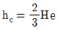
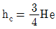
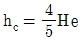
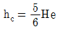
(정답률: 알수없음)
42. 지하수에 대한 설명 중 옳지 않은 것은?
- 불투수층 위의 대수층 내에 자유 지하수면을 가지는 비피압대수층을 양수하는 우물 중 우물바닥이 불투수층까지 도달한 것을 심정이라 한다.
- 불투수층 사이에 낀 투수층 내에 포함되어 있는 지하수를 피압대수층이라 하며 이를 양수하는 우물을 굴착정이라 한다.
- 점토층과 같이 불투수층 사이에 낀 투수층 내에서 압력을 받고 있는 지하수를 자유면 지하수라 하고 이를 양수하는 우물 중 우물바닥이 불투수층까지 도달하지 않은 것을 천정이라 한다.
- 다르시(Darcy)의 법칙에서 지하수 유속은 동수경사에 비례하며 투수계수 k 는 토사의 간극률과 입경 등에 따라 다르다.
(정답률: 알수없음)
43. 수축단면에 대한 설명 중 옳은 것은?
- 상류에서 사류로 변화할 때 발생한다.
- 수축단면에서의 유속을 오리피스의 평균유속이라 한다.
- 사류에서 상류로 변화할 때 발생한다.
- 오리피스의 유출수액에서 발생한다.
(정답률: 알수없음)
44. Maning의 조도계수 n= 0.012인 원관을 사용하여 2m3/sec의 물을 동수경사 1/100 로 송수하는 데 가장 적합한 관의 지름은?
- 91cm
- 81cm
- 71cm
- 61cm
(정답률: 알수없음)
45. 다음 중 일 평균기온(mean daily temperature)의 산출 방법으로 옳은 것은?
- 매일 초대 기온을 산술평균한다.
- 3일~6일의 기온을 평균한다.
- 일 최고 및 최저 기온을 평균한다.
- 특정한 날의 최고온도를 몇 일에 걸쳐 평균한다.
(정답률: 알수없음)
46. 5m/sec의 속도로 흐르는 물의 속도수두는?
- 1.28m
- 3.56m
- 0.64m
- 0.32m
(정답률: 알수없음)
47. 벤추리미터(Venturi meter)는 무엇을 측정하는데 사용하는 기구인가?
- 관내의 유량과 압력
- 관내의 수면차
- 관내의 유량과 유속
- 관내의 유체 점성
(정답률: 알수없음)
48. 삼각위어에서 수두측정시 1%의 오차가 발생하였다면 유량에는 몇 %의 오차가 발생하겠는가?
- 1%
- 2%
- 2.5%
- 4%
(정답률: 알수없음)
49. 길이가 200m인 원관 내에 물이 유속 3m/sec로 흐르고 있을때 마찰손실수두가 7m, 관로의 직경이 300mm라면 관로의 마찰손실계수는?
- 0.023
- 0.031
- 0.035
- 0.042
(정답률: 알수없음)
50. 수면 아래 30 m 지점에서의 수압을 kg/cm2으로 표시하면 얼마인가?
- 3kg/cm2
- 30kg/cm2
- 300kg/cm2
- 3000kg/cm2
(정답률: 알수없음)
51. 10℃ 물방울의 지름이 4mm일 때 그 내부의 압력과 외부의 압력차는? (단, 10℃에 대한 표면장력은 0.0757g/cm로 한다.)
- 0.00757g/cm2
- 0.0757g/cm2
- 0.757g/cm2
- 7.57g/cm2
(정답률: 알수없음)
52. 개수로에 대한 다음 설명 중 옳은 것은?
- 동수경사선과 에너지 경사선은 항상 평행하다.
- 에너지 경사선은 자유수면과 일치한다.
- 동수경사선은 에너지 경사선과 항상 일치한다.
- 동수경사선과 자유수면은 항상 일치한다.
(정답률: 알수없음)
53. 다음 중 부체가 불안정한 상태가 되기 쉬운 조건은?
- 부양면에 대한 단면1차 모멘트가 작을수록
- 부양면에 대한 단면1차 모멘트가 클수록
- 부양면에 대한 단면2차 모멘트가 작을수록
- 부양면에 대한 단멵2차 모멘트가 클수록
(정답률: 알수없음)
54. 그림과 같은 직사각형 평면이 연직으로 서 있을 때 그 중심의 수심을 HG라 하면 압력의 중심위치(작용점)를 a, b, HG로 표현한 것으로 옳은 것은?
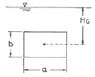
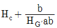
(정답률: 알수없음)
55. 그림과 같은 우량관측소의 강우량에 대해서 Thiessen 법으로 구한 이 유역의 평균 강우량은?
- 26.03 mm
- 24.24 mm
- 22.32 mm
- 21.33 mm
(정답률: 알수없음)
56. 그림과 같은 단면에서 측면의 기울기가 양쪽이 같을 경우 수로에 평균유속이 3m/sec라 하면 유량은?
- 0.5m3/sec
- 1.0m3/sec
- 2.0m3/sec
- 3.0m3/sec
(정답률: 알수없음)
57. 비중이 0.92 인 빙산이 비중 1.025의 해수면 위에 떠있고 수면 위로 나온 빙산의 부피가 180m3 이면 빙산의 전체 부피는 약 얼마인가?
- 1,656m3
- 1,757m3
- 1,845m3
- 1,937m3
(정답률: 알수없음)
58. 비유량(specific discharge)을 바르게 설명한 것은?
- 유량측정단면에서의 유량을 그 유역의 배수면적으로 나눈 것
- 하천의 유량을 단위 폭으로 나눈 것
- 유입량을 유출량으로 나눈 것
- 유량을 비에너지로 나눈 것
(정답률: 알수없음)
59. IDF도(圖)를 이용하여 강우강도를 구하기 위해서 필요한 요소로 짝지어진 것은?
- 최대강우량, 생기빈도
- 유역면적, 최대강우량
- 강우지속기간, 재현기간
- 면적강우량비, 빈도계수
(정답률: 알수없음)
60. 다음 중 토양의 침투능(Infiltration Capacity) 결정방법에 해당 되지 않는 것은?
- 침투계에 의한 실측법
- 경험공식에의한 계산법
- 침투지수에 의한 수문곡선법
- 물수지 원리에 의한 산정법
(정답률: 알수없음)
4과목: 철근콘크리트 및 강구조
61. 이형철근이 인장을 받을 때 기본 정착 길이를 구하는식으로 옳은 것은? (단, db는 철근의공칭지름)
(정답률: 알수없음)
62. 슬래브에 배력철근을 배근하는 이유로 잘못된 것은?
- 응력을 고르게 분산시킨다.
- 주 철근의 간격을 유지시킨다.
- 주 철근의 양을 감소신다.
- 콘크리트의 건조 수축이나 온도변화에 의한 수축을 감소시킨다.
(정답률: 알수없음)
63. 복철근 직사각형 단면의 해석을 위한 아래 그림에서 Єs′의 값은?
- 0.003의 85%
- 1/3×0.003
(정답률: 알수없음)
64. 콘크리트구조설계기준에서 고려하고 있는 철근콘크리트보의 공칭전단강도(Vn)에 영향을 주는 인자가 아닌 것은?
- 종방향철근에 의한 전단강도
- 콘크리트에 의한 전단강도
- 주인장 철근에 30°이상의 각도로 구부린 굽힘철근에 의한 전단강도
- 주인장 철근에 45°이상의 각도로 설치되는 스터럽에 의한 전단강도
(정답률: 알수없음)
65. 리벳이음에서 리벳 지름 d = 19mm, 철판 두께 t = 12mm, 허용 전단응력은 80Mpa, 허용 지압응력은 160MPa 일 때 이 리벳의 강도는? (단, 1면전단의 경우임)
- 22.7 kN
- 28.4 kN
- 30.9 kN
- 36.5 kN
(정답률: 알수없음)
66. 철근콘크리트보에서 계수전단력 Vu가 Vc의 1/2을 초과하고 비틀림을 고려하지 않아도 되는 경우 요구되는 전단철근의 최소 단면적은? (단, bw=300㎜, 전단철근의 간격 s=200mm, 횡방향 철근의 설계기준강도(fyt)=300MPa, fck=30MPa)
- 35mm2
- 70mm2
- 1⑤mm2
- 140mm2
(정답률: 알수없음)
67. PSC에서 프리텐션 방식의 장점이 아닌 것은?
- PS 강재를 곡선으로 배치하기 쉽다.
- 정착장치가 필요하지 않다.
- 제품의 품질에 대한 신뢰도가 높다.
- 대량 제조가 가능하다.
(정답률: 알수없음)
68. 다음 그림과 같이 용접이음을 했을 경우 전단응력은?
- 78.9 MPa
- 67.5 MPa
- 57.5 MPa
- 45.9 MPa
(정답률: 40%)
69. 철근콘크리트 부재에서 부재축에 직각으로 배치된 전단 철근의 최대간격에 대한 설명으로 옳은 것은? (단, d는 유효길이)
- 0.8d 이하이어야 하고 또한 600mm 이하로 하여야 한다.
- 500mm 이하로 하여야 한다.
- 0.5d 이하이어야 하고 또한 600mm 이하로 하여야 한다.
- 800mm 이하로 하여야 한다.
(정답률: 60%)
70. 다음 중 강도감소계수( )를 적용할 필요가 없는 경우는?
)를 적용할 필요가 없는 경우는?
- 휨 강도의 계산
- 전단 강도의 계산
- 비틀림 강도의 계산
- 철근의 정착 길이 계산
(정답률: 알수없음)
71. 다음의 프리스트레스 손실원인 중 프리스트레스 도입후 시간이 경과됨에 따라 발생하는 손실에 해당하지 않은 것은?
- 정착장치의 활동
- PS강재의 릴랙세이션
- 콘크리트의 크리프
- 콘크리트의 건조수축
(정답률: 30%)
72. 철근콘크리트 구조물 설계시 철근 간격에 대한 설명으로 옳지 않은 것은? (단, 굵은골재의 공칭 최대치수에 관련된 규정은 만족하는 것으로 가정한다.)
- 동일 평면에서 평행한 철근 사이의 수평 순간격은 25mm 이상, 또한 철근의 공칭지름 이상으로 하여야한다.
- 상단과 하단에 2단 이상으로 배치된 경우 상하 철근은 동일 연직면 내에 배치되어야 하고 이때 상하 철근의 순간격은 25mm 이상으로 하여야 한다.
- 나선철근과 띠철근 기둥에서 축방향 철근의 순간은 40mm 이상, 또한 철근 공칭지름의 1.5배 이상으로 하여야 한다.
- 벽체 또한 슬래브에서 휨 주철근의 간격은 벽체나 슬래브 두께의 2배 이하로 하여야 하고, 또한 300mm 이하로 하여야 한다.
(정답률: 알수없음)
73. 다음 프리스트레스트 콘크리트(PSC)에 의한 교량 가설법중에서 교대 후방의 작업장에서 교량 상부구조를 10~30m의 블록(bIock)으로 제작한 후, 미리 가설된 교각의 교축방향으로 밀어내고 다음 블록을 다시 제작하고 연결하여 연속으로 밀어 내며 시공하는 공법?
- 캔틸레버공법(F.C.M.)
- 이동식 지보공법(M.S.S)
- 압출공법(I.L.M)
- 동바리 공법(F.S.M)
(정답률: 알수없음)
74. 그림과 같이 인장력을 받는 두 강판을 볼트로 연결 할 경우 발생할 수 있는 파괴모드(failure mode)가 아닌 것은?
- 볼트의 전단파괴
- 볼트의 인장파괴
- 볼트의 지압파괴
- 강판의 지압파괴
(정답률: 알수없음)
75. 뒷부벽식 옹벽을 설계할 때 귓부벽에 대한 설명으로 옳은 것은?
- T형보로 설계하여야 한다.
- 캔틸레버로 설계하여야 한다.
- 직사각형보로 설계하여야 한다.
- 3변 지지된 2방향 슬래브로 설계하여야 한다.
(정답률: 알수없음)
76. SD300 철근을 사용하는 철근콘크리트 구조물에서 피로를 고려하지 않아도 되는 철근의 응력범위는 얼마인가?
- 160MPa
- 150MPa
- 140MPa
- 130MPa
(정답률: 알수없음)
77. 플랜지의 유효폭이 b이고 복부의 폭이 bw인 복철근T형 단면보에서 중립축이 복구내에 있고 부(-) 휨 모멘트를 받아 복부의 아래 쪽이 압축을 받게 될 때의 응력 계산방법으로 옳은 것은?
- 폭이 bw인 직4각형보로 계산
- 폭이 b인 T형보로 계산
- 폭이 bw인 T형보로 계산
- 폭이 b인 직4각형보로 계산
(정답률: 알수없음)
78. 단철근 직사각형 보에 fck=21MPa, fy=400MPa 일 때 균형 철근비 ρb의 값은?
- 0.019
- 0.023
- 0.027
- 0.033
(정답률: 알수없음)
79. 전단력과 힘모멘트만을 받는 부재에서 콘크리트가 부담하는 공칭전단강도 Vc는?
(정답률: 알수없음)
80. 그림과 같은 T 형보에 대한 등가깊이 a 는 얼마인가? (단, fck=21MPa, fy=400MPa)
- 40mm
- 70mm
- 80mm
- 150mm
(정답률: 알수없음)
5과목: 토질 및 기초
81. 다음은 옹벽의 안정조건에 관한 사항이다. 잘못 설명된 것은?
- 전도에 대한 저항휨모멘트는 횡토압에 의한 전도 휨모멘트의 2.0배 이상이어야 한다.
- 지반의 지지력에 대한 안정성 검토시 허용지지력은 극한 지지력의1/2배를 취한다.
- 옹벽이 활동에 대한 안정을 유지하기 위해서는 활동에 대한 저항력이 수평력의 1.5배 이상이어야 한다.
- 침하의 현상이 일어나지 않으려면 기초지반에 유발되는 최대 지반반력이 지반의 허용지지력을 초과하지 않아야 한다.
(정답률: 알수없음)
82. 점착력이 큰 지반에 강성의 기초가 놓여 있을 때 기초바닥의 응력상태를 설명한 것 중 옳은 것은?
- 기초 밑 전체가 일정하다.
- 기초 중앙에서 최대응력이 발생한다.
- 기초 모서리에서 최대응력이 발생한다.
- 점착력으로 인해 기초바닥에 응력이 발생하지 않는다.
(정답률: 알수없음)
83. 충분히 다진 현장에서 모래 치환법에 의한 현장밀도 실험을 한 결과 구멍에서 파낸 흙의 무게 1536g, 함수비가 15%이었고 구멍에 채워진 단위중량이 1.70g/cm인 표준 모래의 무게1411g이었다. 이 현장이 95% 다짐도가 된 상태가 되려면 이 흙의 실내 실험실에서 구한 최대 건조단이 중량(γdmax)은 얼마 인가?
- 1.69g/cm
- 1.79g/cm
- 1.85g/cm
- 1.93g/cm
(정답률: 알수없음)
84. 직경30cm 재하판으로 측정된 지지력계수 K30이 12.32kg/cm3이면 직경 75cm 재하판으로 측정된 지지력계수는?
- 8.2kg/cm
- 5.6kg/cm
- 18.5kg/cm
- 4.5kg/cm
(정답률: 알수없음)
85. 직접 전단시험에서 수직응력이10kg/cm일 때 전단응력이 8kg/cm였고 수직응력를 20kg/cm로 증가시켰을 때 전단응력은 12kg/cm였다.이 때 이 흙의 점착력은?
- 0.5kg/cm
- 4kg/cm
- 6kg/cm
- 2kg/cm
(정답률: 알수없음)
86. 다음 그림의 파괴 포락선중에서 완전 포화된 점성토에 대해 비압밀비배수 삼축압력(UU)시험을 했을 때 생기는 파괴포락선은 어느 것인가?
- ①
- ②
- ③
- ④
(정답률: 알수없음)
87. 그림에서 5m깊이에 지하수가 있고 지하수면에서 2m 높이 까지 모관수가 포화되어있다.10m깊이에 있는 X-X면상의 유효연직 응력은? (단, γd=1.6t/m3, γsatt/m3)
- 10.6t/m2
- 12.4t/m2
- 17.4t/m2
- 18.6t/m2
(정답률: 알수없음)
88. 직접 기초의 굴착공법이 아닌 것은?
- 오픈 컷(open cut)공법
- 트랜치 컷(Trench cut)공법
- 아일랜드(Island)공법
- 디프 웰(Deep wall)공법
(정답률: 알수없음)
89. Rod의 끝에 설치한 저항체를 땅속에 삽입하여 관입, 회전, 인발 등의 저항으로 토층의 성질을 탐사하는 것을 무엇이라 하는가?
- Boring
- Sounding
- Sampling
- Wash boring
(정답률: 알수없음)
90. 점착력C가 0.7kg/cm인 점토시료를 일축압력강도 시험을 한 결과 일축압축강도(fy)1.67kg/cm를 얻었다. 이 흙의 강도정수 를 구하면 약 얼마인가?
- 4˚
- 6˚
- 8˚
- 10˚
(정답률: 알수없음)
91. 절편법에 의한 사면의 안정해석시 가장 먼저 결정 되어야 할 사항은?
- 가상활동면
- 절편의 중량
- 활동면상의 점착력
- 호라동면상의 내부마찰각
(정답률: 알수없음)
92. 크기가1.5mX1.5m인 정방형 직접기초가 있다. 근입깊이가 1.0m일 때, 기초저면의 허용지지력을 테르자기(Torzaghi) 방법에 의하여 구하면? (단, 기초지반의 점착력은 1.5t/m, 단위중량은1.8t/m, 마찰각은 20˚이고 이 때의 지지력 계수는 Nx=17.69, Nq=7.44, Nr=3.64이며, 허용지지력에 대한 안전율은 4.0으로 한다.)
- 약 13t/m2
- 약 14t/m2
- 약 15t/m2
- 약 16t/m2
(정답률: 알수없음)
93. 다음 설명 중에서 동상(涷上)에 대한 대책 방법이 될 수 없는 것은?
- 지하수위와 동결 심도사이에 모래,자갈층을 형성하여 모세관 현상으로 인한 물의 상승을 막는다.
- 동결 심도내의 silt질 흙을 모래나 자갈로 치환한다.
- 동결 심도 내의 흙에 염화 칼슘이나 염화나트륨 등을 섞어 빙점을 낮춘다.
- 아이스 렌스(ice lense)형성이 될수 있도록 충분한 물을 공급한다.
(정답률: 알수없음)
94. 흙의 애터버그(Atterberg)한계는 어느 것으로 나타내는가?
- 공극비
- 상대밀도
- 포화도
- 함수비
(정답률: 알수없음)
95. 흙의 다짐에서 에너지를 증가시키면 어떤 변화가 생기는가?
- 최적 함수비는 증가하고, 최대 건조단위중량은 감소한다.
- 최적 함수비와 건조단위중량은 증가한다.
- 최적함수비는 감소하고, 최대 건조단위중량은 증가한다.
- 최적 함수비와 최대 건조단위중량은 감소한다.
(정답률: 알수없음)
96. 압밀시험에서 압축지수를 구하는 가장 중요한 목적은?
- 압밀침하량을 결정하기 위함이다.
- 압밀속도를 결정하기 위함이다.
- 투수량을 결정하기 위함이다.
- 시간계수를 결정하기 위함이다.
(정답률: 알수없음)
97. 현장에서 모래의 건조밀도를 측정한 결과 1.52g/cm이고 실험실에서 이 모래의 최대 및 최소 건조단위 중량을 구하면 각각 1.68g/cm3 및 1.47g/cm3이었다고 하면 이 모래의 상대밀도는?
- 58.2%
- 31.7%
- 26.3%
- 13.5%
(정답률: 알수없음)
98. 다음 그림에서 분사현상에 대한 안전율은 얼마인가? (단, 모래의 비중은 2.65, 간극비 0.6이다.)
- 1.01
- 2.44
- 1.54
- 1.86
(정답률: 알수없음)
99. 말뚝기초에서 부마찰력(nagative skin friction)에 대한 설명이다.옳지 않은 것은?
- 지하수위 저하로 지반이 침하할 때 발생한다.
- 지반이 압밀진행중인 연약점토 지반인 경우에 발생한다.
- 발생이 예상되면 대책으로 말뚝주면에 역청 등으로 코팅하는 것이 좋다.
- 말뚝주면에 상방향으로 작용하는 마찰력이다.
(정답률: 알수없음)
100. 어떤 유선망도에서 상하류면의 수두차가 4m, 등수두면의 수가 13개, 유로의 수가 7개일 때 단위폭 1m당 1일 침투량은 얼마인가? (단, 투수층의 투수계수 K=2.0×10-4cm/sec)
- 8.0×10-1m3/day
- 9.62×10-1m3/day
- 3.72×10-1m3/day
- 1.83×10-1m3/day
(정답률: 알수없음)
6과목: 상하수도공학
101. 급수방식의 종류가 아닌 것은?
- 직결식 급수방식
- 역류식 급수방식
- 저수조식 급수방식
- 병용식 급수방식
(정답률: 알수없음)
102. 하수용 펌프의 비교회전도(Ns)에 관한 설명으로 틀린 것은?
- 이 값이 크게 될수록 흡입성능이 나쁘고 공동현상이 발생하기 쉽다.
- 양수량 및 전양정이 같으면 회전수가 많을수록 이 값이 크게 된다.
- 이 값이 적으면 유량이 많은 저양정 펌프가 된다.
- 펌프의 회전수, 양수량 및 전양정으로부터 이 값이 구해진다.
(정답률: 알수없음)
103. 하수관거의 각종 단면형상에 대한 설명중 옳지 않은 것은?
- 원형 하수관거는 수리학적으로 유리하며 내경 3m 정도 까지 공장제품을 사용할 수 있어 공사기간이 단축된다.
- 직사각형 단면의 관거는 구조계산이 복잡하고 공사기간이 단축된다.
- 말굽형 단면은 수리학적으로 유리한 것이 장점이나 시공성이 열악한 것이 단점이다.
- 계란형 단면은 수직방향의 시공에 정확도가 요구되므로 면밀한 시공이 필요하다.
(정답률: 알수없음)
104. 평균유속 0.5m/sec, 유효수심 1.0m, 표면부하율 2,000m3/m2∙day일 때 침사지의 유효길이는?
- 21.60m
- 22.62m
- 22.68m
- 23.08m
(정답률: 알수없음)
1⑤. 취수장에서부터 가정에 이르는 상수도계통을 옳게 나열한 것은?
- 취수시설-정수시설-도수시설-송수시설-배수시설-급수시설
- 취수시설-도수시설-송수시설-정수시설-배수시설-급수시설
- 취수시설-도수시설-정수시설-송수시설-배수시설-급수시설
- 취수시설-도수시설-송수시설-배수시설-정수시설-급수시설
(정답률: 알수없음)
106. 침전시간 1시간, 침전지의 깊이3m,침강입자의 침전속도 V가 0.027m/min일 때 침전 효과는?
- 48%
- 52%
- 54%
- 58%
(정답률: 알수없음)
107. 정수시설 중 급속여과지의 여과모래에 대한 기준으로 옳지 않은 것은?
- 유효경은 0.45~1.0mm 중에서 적정한 입경을 선정한다.
- 균등계수는 2.7 이상으로 한다.
- 최대경은 2.0mm 이하로 한다.
- 마멸률은 3% 이하로 한다.
(정답률: 알수없음)
108. 강우강도 유입시간180초, 유역면적 4km, 유출계수 0.9, 하수관내 유속 50m/min인 경우에 길이1km의 하수관 peak 유량은? (여기서, t는 분단위)
- 43.7m3/sec
- 73.52m3/sec
- 95.41m3/sec
- 102.43m3/sec
(정답률: 알수없음)
109. 생물학적으로 인을 처리할 수 있는 A/0 공정 중 혐기조의 주된 역할로 맞는 것은?
- 인의 흡수
- 인의 응집
- 인의 환원
- 인의 방출
(정답률: 알수없음)
110. 하수의 계획1인 최대오수량을 구하는 방법으로 맞는 것은?
- 1인 1일 평균오수량×계획인구+공장폐수
- 1인 1일 최대오수량×계획인구+공장폐수
- 1인 1일 평균오수량×계획인구+공장폐수+지하수량+기타배수량
- 1인 1일 최대오수량×계획인구+공장폐수+지하수량+기타배수량
(정답률: 알수없음)
111. 상수도에서 펌프가압으로 배수할 경우에 펌프의 급정지, 급기동 등으로 수격작용(水擊作用)이 일어날 경우 배수관의 손상을 방지하기 위하여 설치하는 밸브는?
- 안전밸브
- 배수밸브
- 가압밸브
- 자동지밸브
(정답률: 알수없음)
112. 하수배제 방식에 대한 설명으로 옳은 것은?
- 합류식 하수관거는 청천시(晴天時) 관로내 퇴적량이 분류식 하수관거에 비하여 많다.
- 합류식 하수배제 방식은 강우초기에 도로 위의 오염물질이 직접 하천으로 유입된다.
- 분류식 하수배제 방식은 침수피해 다발지경에 유리한 방식이다.
- 분류식 하수관거에서는 우천시 일정한 유량 이상되면 오수가 월류한다.
(정답률: 알수없음)
113. 상수도 시설의 설계 시 계획취수량, 계획도수량, 계획 정수량의 기준이 되는 것은?
- 계획시간 최대급수량
- 계획1일 최대급수량
- 계획1일 평균급수량
- 계획1일 총급수량
(정답률: 알수없음)
114. 다음 중 부영양화(Eutrophication)의 주된 원인 물질은?
- 질소 및 인
- 탄소 및 유황
- 중금속
- 염소 및 질산화물
(정답률: 알수없음)
115. 관로의 도중에 설치하여 관로의 수압을 조절하는 설비로 계획도수량의 1.5분 이상의 용량을 가져 하는 것은?
- 양수정
- 접합정
- 수로교
- 흡입정
(정답률: 알수없음)
116. 정수시설 중 소독(살균)설비에 사용되는 염소제에 대한 설명으로 틀린 것은?
- 잔류효과가 있는 것이 장점이다.
- 트리할로메탄 등의 유기염소화합물을 생성한다.
- pH가 높아질수록 소독효과는 커진다.
- 염소제의 주입지점은 착수정, 염소혼화지,정수지의 입구 등 잘 혼화되는 장소로 한다.
(정답률: 알수없음)
117. 오수관거 내에서 부유물 침전을 막기 위해 요구되는 최소 유속은? (단, 계획 시간 최대오수량 기준)
- 0.2 m/sec
- 0.6 m/sec
- 2.0 m/sec
- 2.5 m/sec
(정답률: 알수없음)
118. "BOD 값이 크다“는 것이 의미하는 것은?
- 미생물 분해가 가능한 물질이 많다.
- 영양염류가 풍부하다.
- 용존산소가 풍부하다.
- 무기물질이 충분하다.
(정답률: 알수없음)
119. 계획급수인구가 5,000명이고 1인1일 최대급수량이 0.2m3이며, 여과속도는 130m/day인 급속여과지의 면적은?
- 7.69m
- 15.38m
- 30.76m
- 76.92m
(정답률: 알수없음)
120. 수원의 종류를 구분할 때 지표수에 해당하지 않는 것은?
- 용천수
- 하천수
- 호소수
- 저수지수
(정답률: 알수없음)